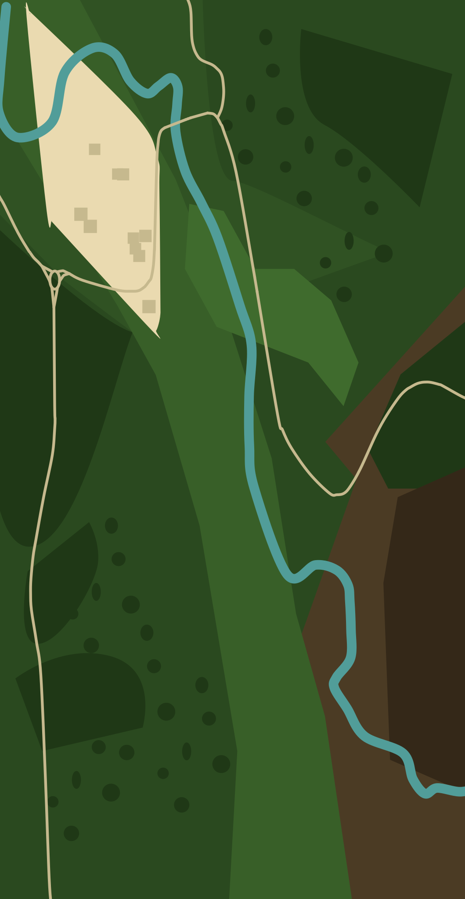

Visiter
Sillans
Visiter
Sillans
✕
Navigation
Accueil
Carte du parcours
Règles de visite
Quiz
À propos
Biodiversité
Géologie
Histoire
Sécurité
0 / 14

✕
Découvrir →
✕
🎧 Écouter la description
0:00
Le bon geste
En savoir plus
Espèces observables